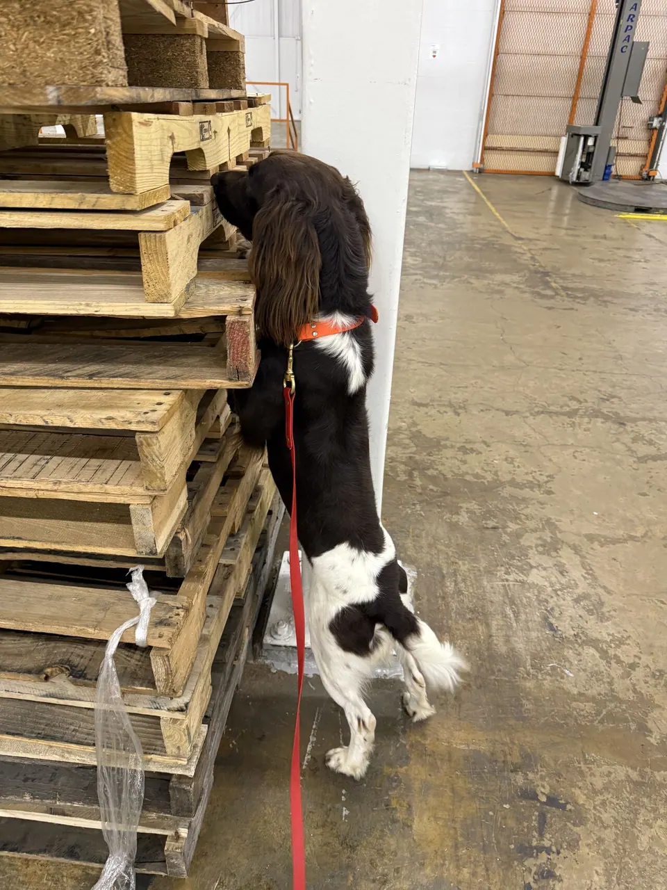

Nationwide · Commercial & industrial
Rodent programs that travel to you.
Certified K9 teams for food processing, agriculture, warehousing and multi-site operators anywhere in the country. Four services that work together: detection, abatement, exclusion and control.

Four services, one program
Most rodent programs only catch what wanders into a device. Ours finds where rodents live, removes them, seals them out and keeps watch.
Rodent detection
Certified dogs find active harborage, runways and entry points that traps and visual inspection miss.
Learn moreRodent abatement
Dogs that alert only on live animals, working with our team to remove rodents on site.
Learn moreRodent exclusion
We seal the gaps rodents use, with materials they cannot chew through.
Learn moreRodent control
Trapping, monitoring and follow-up that clear what is inside while the building is sealed.
Learn moreTwo kinds of rodent dogs
Detection dogs alert on all rodent activity, old and new. They show us the full picture: where rodents have been, where they travel and how they get into the building. That map guides exclusion and tells us where to set traps.
Abatement dogs alert only on live animals. They focus our team on rodents that are there right now, so removal is fast and targeted.
Who we work with
- Food processing and manufacturing plants under GFSI and AIB audit
- Agriculture, grain and feed facilities
- Warehouses and distribution centers
- Restaurants, hotels and casinos
- Multi-site operators who need the same standard at every location
- Pest control companies who bring us in as a K9 partner
Plan a nationwide program
Call or text and we will scope a site assessment.
803-226-3155 · kim@ck9ps.com